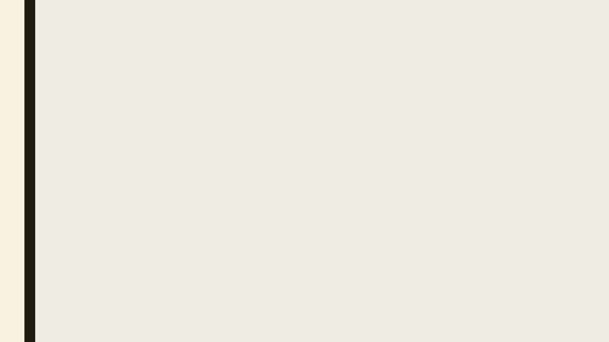
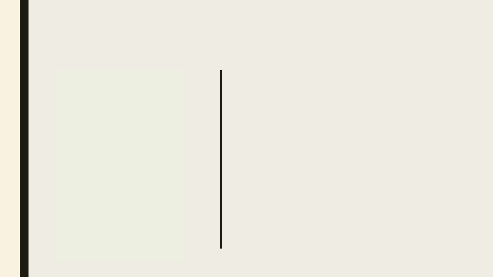
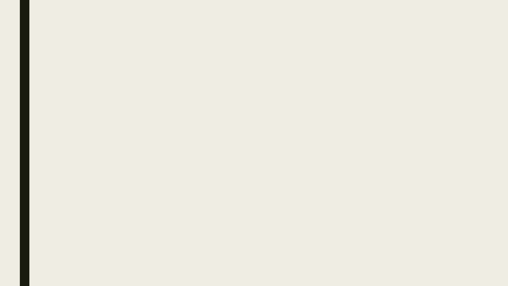

CITACE
R.J.Morvai

Kdy citovat?
■ Při vytváření jakéhokoliv odborného, komerčního obsahu nebo veřejného obsahu.
– ergo. Vždy („prý“)
Co
■ Při vytváření jakéhokoliv odborného, komerčního obsahu nebo veřejného obsahu.
– ergo. Vždy („prý“)

Normy a metody
Norma
■ Pro citace existují
normy. Vysoké školy
mají zpravidla příručku
jak by měli citace
vypadat.
■ Většina českých škol
používá normu ČSN ISO
690Informace a
dokumentace – Pravidla pro
bibliografické odkazy a citace
informačních zdrojů.
Metody
■ Číselné odkazy
– čísli odkazujeme na seznam na konci
■ Odkazy + průběžné citace pod čarou
– čísli odkazujeme na průběžné citace v záhlaví
každé strany
■ Harvardská metoda – jméno + datum
– v závorce autor + datum vydání
– na konci seznam kompletních citací
∟ podle příjmení autorů

■ https://knihovna.fsv.cuni.cz/podpora-studia-vedy/jak-proc-citovat